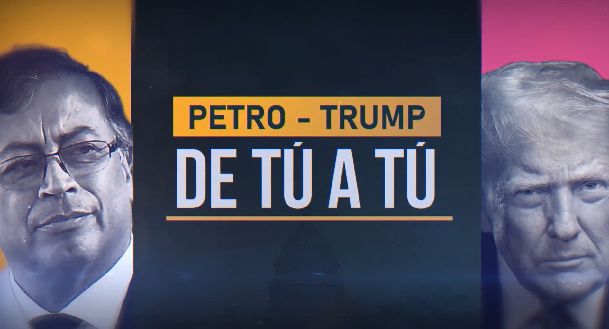

En la intersección entre la diplomacia internacional y la comunicación de masas, los medios de comunicación operan no solo como relatores de la historia, sino como actores políticos que moldean la percepción pública según los intereses de sus conglomerados económicos. Un caso paradigmático de esta dinámica en la historia reciente de Colombia fue la crisis y posterior resolución diplomática entre el presidente colombiano Gustavo Petro y el mandatario estadounidense Donald Trump entre 2025 y 2026.
Este ensayo analiza cómo los medios tradicionales colombianos instrumentalizaron las amenazas iniciales de Trump para generar un clima de pánico y desestabilización interna, y cómo, frente a la resolución pragmática del conflicto, sufrieron una disonancia cognitiva que fue expuesta y contrarrestada por los medios alternativos y las nuevas tecnologías de la información.
El "Encuadre" del Miedo: La caja de resonancia

El regreso de Donald Trump a la Casa Blanca trajo consigo una retórica hostil hacia América Latina. Hacia Colombia, y específicamente hacia el presidente Gustavo Petro, los ataques verbales iniciales de Trump fueron capitalizados de inmediato por los medios de comunicación hegemónicos del país (cuyas juntas directivas están estrechamente ligadas a los principales grupos financieros y élites políticas tradicionales).
"La estrategia mediática no buscaba defender la soberanía nacional, sino utilizar la amenaza externa como un arma de oposición interna."
Teóricos como Noam Chomsky han explicado cómo los medios fabrican el consenso. En este caso, cadenas de televisión y revistas de circulación nacional aplicaron un framing (encuadre) apocalíptico. Titulares alarmistas predecían la ruina económica de Colombia frente al chantaje arancelario extranjero, omitiendo el contexto global.
Laboratorio de Análisis: Encuadre Mediático
"Colombia al borde de la quiebra inminente por la furia arancelaria de Trump"
Análisis Técnico (Framing):
Uso de Agenda-Setting para priorizar el pánico. Se utiliza la figura internacional para castigar políticamente al adversario interno.
Diplomacia Digital y Persuasión
Frente al cerco mediático tradicional, la respuesta del gobierno colombiano representó un hito en el uso de las nuevas tecnologías para la diplomacia directa. Gustavo Petro aplicó lo que Manuel Castells denomina "autocomunicación de masas". A través de su cuenta en la red social X (antes Twitter) y alocuciones transmitidas por plataformas digitales, eludió el filtro de las salas de redacción.
Su estrategia de persuasión comunicativa fue magistral: en lugar de responder al insulto con insulto, optó por la coherencia argumentativa. Posicionó el debate en términos de interdependencia económica y pragmatismo comercial. Utilizó la tecnología para hablarle directamente tanto a su base política como a la comunidad internacional.